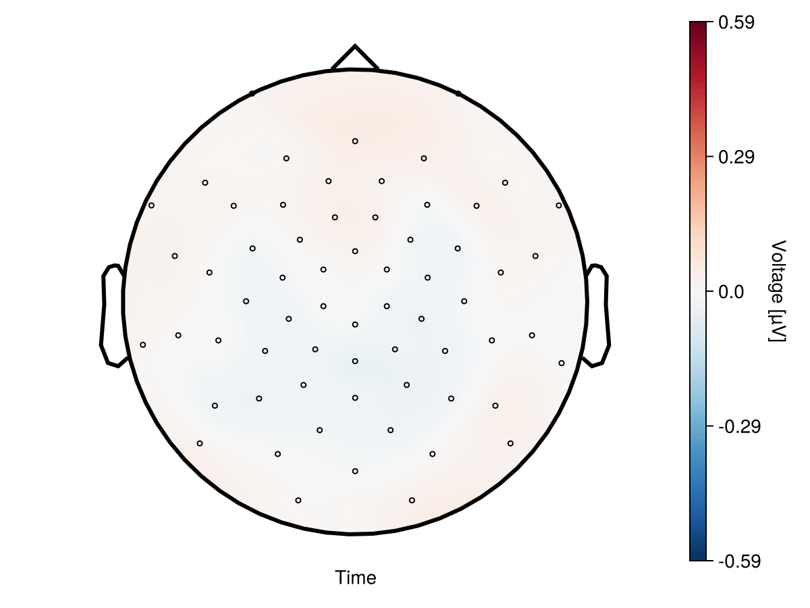
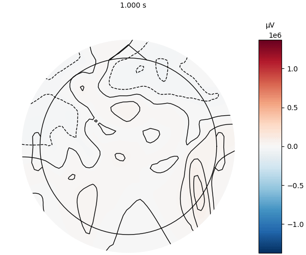

Speed measurement
Here we will compare the speed of plotting UnfoldMakie with MNE (Python) and EEGLAB (MATLAB).
Three cases are measured:
- Single topoplot
- Topoplot series with 50 topoplots
- Topoplott animation with 50 timestamps
Note that the results of benchmarking on your computer and on Github may differ.
using UnfoldMakie
using TopoPlots
using BenchmarkTools
using Observables
using CairoMakie
using Statistics
using PythonPlot;
using PyMNE; CondaPkg Found dependencies: /home/runner/work/UnfoldMakie.jl/UnfoldMakie.jl/docs/CondaPkg.toml
CondaPkg Found dependencies: /home/runner/.julia/packages/CondaPkg/lKlVY/CondaPkg.toml
CondaPkg Found dependencies: /home/runner/.julia/packages/PyMNE/AlJE6/CondaPkg.toml
CondaPkg Found dependencies: /home/runner/.julia/packages/PythonCall/5WGSP/CondaPkg.toml
CondaPkg Found dependencies: /home/runner/.julia/packages/PythonPlot/oS8x4/CondaPkg.toml
CondaPkg Resolving changes
+ libstdcxx
+ libstdcxx-ng
+ matplotlib
+ mne
+ openssl
+ python
CondaPkg Creating environment
│ /home/runner/.julia/artifacts/43005ee838d3b9ab9b3f1d790fa2e43bd62e6912/bin/micromamba
│ -r /home/runner/.julia/scratchspaces/0b3b1443-0f03-428d-bdfb-f27f9c1191ea/root
│ create
│ -y
│ -p /home/runner/work/UnfoldMakie.jl/UnfoldMakie.jl/docs/.CondaPkg/env
│ --override-channels
│ libstdcxx[version='>=3.4,<15.0']
│ libstdcxx-ng[version='>=3.4,<15.0']
│ matplotlib[version='3.8.*, >=1']
│ mne[version='>=1.4, <2']
│ openssl[version='>=3, <3.6']
│ python[version='3.12.*, >=3.10,!=3.14.0,!=3.14.1,<4, >=3.4,<4',channel='conda-forge',build='*cp*']
└ -c conda-forge
Transaction
Prefix: /home/runner/work/UnfoldMakie.jl/UnfoldMakie.jl/docs/.CondaPkg/env
Updating specs:
- libstdcxx[version=">=3.4,<15.0"]
- libstdcxx-ng[version=">=3.4,<15.0"]
- matplotlib[version="=3.8,>=1"]
- mne[version=">=1.4,<2"]
- openssl[version=">=3,<3.6"]
- conda-forge::python[version="=3.12,(>=3.10,(!=3.14.0,(!=3.14.1,(<4,(>=3.4,<4)))))",build="*cp*"]
Package Version Build Channel Size
────────────────────────────────────────────────────────────────────────────────────────────────────────────
Install:
────────────────────────────────────────────────────────────────────────────────────────────────────────────
+ _openmp_mutex 4.5 20_gnu conda-forge Cached
+ _python_abi3_support 1.0 hd8ed1ab_3 conda-forge Cached
+ aiohappyeyeballs 2.7.1 pyhd8ed1ab_0 conda-forge Cached
+ aiohttp 3.14.2 py312h5d8c7f2_0 conda-forge Cached
+ aiosignal 1.4.0 pyhd8ed1ab_0 conda-forge Cached
+ alsa-lib 1.2.16.1 hb03c661_0 conda-forge Cached
+ annotated-doc 0.0.4 pyhcf101f3_0 conda-forge Cached
+ antio 0.7.1 py311h46c35a3_1 conda-forge Cached
+ anyio 4.14.2 pyhcf101f3_0 conda-forge Cached
+ aom 3.14.1 pl5321h039972f_1 conda-forge Cached
+ argon2-cffi 25.1.0 pyhd8ed1ab_0 conda-forge Cached
+ argon2-cffi-bindings 25.1.0 py312h4c3975b_2 conda-forge Cached
+ arrow 1.4.0 pyhcf101f3_0 conda-forge Cached
+ asttokens 3.0.2 pyhd8ed1ab_0 conda-forge Cached
+ async-lru 2.3.0 pyhcf101f3_0 conda-forge Cached
+ attrs 26.1.0 pyhcf101f3_0 conda-forge Cached
+ babel 2.18.0 pyhcf101f3_1 conda-forge Cached
+ backports.zstd 1.6.0 py312h90b7ffd_0 conda-forge Cached
+ beautifulsoup4 4.15.0 pyha770c72_0 conda-forge Cached
+ bleach 6.4.0 pyhcf101f3_0 conda-forge Cached
+ bleach-with-css 6.4.0 hac0b51c_0 conda-forge Cached
+ blosc 1.21.6 he440d0b_1 conda-forge Cached
+ brotli 1.2.0 hed03a55_1 conda-forge Cached
+ brotli-bin 1.2.0 hb03c661_1 conda-forge Cached
+ brotli-python 1.2.0 py312hdb49522_1 conda-forge Cached
+ bzip2 1.0.8 hda65f42_9 conda-forge Cached
+ c-ares 1.34.8 hb03c661_0 conda-forge Cached
+ ca-certificates 2026.7.22 hbd8a1cb_0 conda-forge Cached
+ cachebox 5.2.3 py312h868fb18_1 conda-forge Cached
+ cached-property 1.5.2 hd8ed1ab_2 conda-forge Cached
+ cached_property 1.5.2 pyha770c72_2 conda-forge Cached
+ cairo 1.18.4 he90730b_1 conda-forge Cached
+ certifi 2026.7.22 pyhd8ed1ab_0 conda-forge Cached
+ cffi 2.1.0 py312h460c074_0 conda-forge Cached
+ charset-normalizer 3.4.9 pyhd8ed1ab_0 conda-forge Cached
+ cli11 2.6.2 h54a6638_0 conda-forge Cached
+ click 8.4.2 pyhc90fa1f_0 conda-forge Cached
+ colorama 0.4.6 pyhd8ed1ab_1 conda-forge Cached
+ comm 0.2.3 pyhe01879c_0 conda-forge Cached
+ contourpy 1.3.3 py312h0a2e395_4 conda-forge Cached
+ cpython 3.12.13 py312hd8ed1ab_0 conda-forge Cached
+ cycler 0.12.1 pyhcf101f3_2 conda-forge Cached
+ cyclopts 4.22.0 pyhcf101f3_0 conda-forge Cached
+ cyrus-sasl 2.1.28 hac629b4_1 conda-forge Cached
+ darkdetect 0.8.0 pyhd8ed1ab_1 conda-forge Cached
+ dav1d 1.2.1 hd590300_0 conda-forge Cached
+ dbus 1.16.2 h24cb091_1 conda-forge Cached
+ debugpy 1.8.21 py312h8285ef7_0 conda-forge Cached
+ decorator 5.3.1 pyhd8ed1ab_0 conda-forge Cached
+ deepdiff 9.1.0 pyhcf101f3_0 conda-forge Cached
+ defusedxml 0.7.1 pyhd8ed1ab_0 conda-forge Cached
+ deprecated 1.3.1 pyhd8ed1ab_1 conda-forge Cached
+ dipy 1.12.1 np2py312h0f77346_0 conda-forge Cached
+ docstring_parser 0.18.0 pyhd8ed1ab_0 conda-forge Cached
+ double-conversion 3.4.0 hecca717_0 conda-forge Cached
+ edfio 0.4.14 pyhd8ed1ab_0 conda-forge Cached
+ eeglabio 0.1.3 pyhd8ed1ab_0 conda-forge Cached
+ eigen 5.0.1 hc65338a_0 conda-forge Cached
+ eigen-abi 5.0.1.80 hf414acd_0 conda-forge Cached
+ exceptiongroup 1.3.1 pyhd8ed1ab_0 conda-forge Cached
+ executing 2.2.1 pyhd8ed1ab_0 conda-forge Cached
+ expat 2.8.1 hecca717_1 conda-forge Cached
+ ffmpeg 8.1.2 gpl_h54862ce_904 conda-forge Cached
+ fmt 12.1.0 hff5e90c_0 conda-forge Cached
+ font-ttf-dejavu-sans-mono 2.37 hab24e00_0 conda-forge Cached
+ font-ttf-inconsolata 3.000 h77eed37_0 conda-forge Cached
+ font-ttf-source-code-pro 2.038 h77eed37_0 conda-forge Cached
+ font-ttf-ubuntu 0.83 h77eed37_3 conda-forge Cached
+ fontconfig 2.18.2 h27c8c51_0 conda-forge Cached
+ fonts-conda-ecosystem 1 0 conda-forge Cached
+ fonts-conda-forge 1 hc364b38_1 conda-forge Cached
+ fonttools 4.63.0 py312h8a5da7c_0 conda-forge Cached
+ fqdn 1.5.1 pyhd8ed1ab_1 conda-forge Cached
+ freetype 2.14.3 ha770c72_0 conda-forge Cached
+ fribidi 1.0.16 hb03c661_0 conda-forge Cached
+ frozenlist 1.8.0 py312h447239a_0 conda-forge Cached
+ gdk-pixbuf 2.44.7 h2b0a6b4_0 conda-forge Cached
+ gl2ps 1.4.2 h36e74d4_2 conda-forge Cached
+ glew 2.3.0 h71661d4_0 conda-forge Cached
+ glib 2.88.2 hbe0478d_0 conda-forge Cached
+ glib-tools 2.88.2 h8094192_0 conda-forge Cached
+ glslang 16.3.0 h96af755_0 conda-forge Cached
+ gmp 6.3.0 hac33072_2 conda-forge Cached
+ graphite2 1.3.15 hecca717_0 conda-forge Cached
+ gst-plugins-base 1.26.11 h6d08254_0 conda-forge Cached
+ gstreamer 1.26.11 h29cf534_0 conda-forge Cached
+ h11 0.16.0 pyhcf101f3_1 conda-forge Cached
+ h2 4.4.0 pyhcf101f3_0 conda-forge 100kB
+ h5io 0.2.5 pyhc455866_1 conda-forge Cached
+ h5py 3.16.0 nompi_py312ha4f8f14_102 conda-forge Cached
+ harfbuzz 14.2.1 ha770c72_1 conda-forge Cached
+ hdf4 4.2.15 h2a13503_7 conda-forge Cached
+ hdf5 1.14.6 nompi_h19486de_110 conda-forge Cached
+ hpack 4.2.0 pyhd8ed1ab_0 conda-forge Cached
+ httpcore 1.0.9 pyh29332c3_0 conda-forge Cached
+ httpx 0.28.1 pyhd8ed1ab_0 conda-forge Cached
+ hyperframe 6.1.0 pyhd8ed1ab_0 conda-forge Cached
+ icu 78.3 h33c6efd_1 conda-forge Cached
+ idna 3.18 pyhcf101f3_0 conda-forge Cached
+ imageio 2.37.0 pyhfb79c49_0 conda-forge Cached
+ imageio-ffmpeg 0.6.0 pyhd8ed1ab_0 conda-forge Cached
+ importlib-metadata 9.0.0 pyhcf101f3_0 conda-forge Cached
+ importlib_resources 7.1.0 pyhd8ed1ab_0 conda-forge Cached
+ intel-gmmlib 22.10.0 hb700be7_0 conda-forge Cached
+ intel-media-driver 26.1.6 hecca717_0 conda-forge Cached
+ ipykernel 7.3.0 pyha191276_0 conda-forge Cached
+ ipython 9.15.0 pyh53cf698_0 conda-forge Cached
+ ipython_pygments_lexers 1.1.1 pyhd8ed1ab_0 conda-forge Cached
+ ipywidgets 8.1.8 pyhd8ed1ab_0 conda-forge Cached
+ isoduration 20.11.0 pyhd8ed1ab_1 conda-forge Cached
+ jedi 0.20.0 pyhcf101f3_0 conda-forge Cached
+ jinja2 3.1.6 pyhcf101f3_1 conda-forge Cached
+ joblib 1.5.3 pyhd8ed1ab_0 conda-forge Cached
+ json5 0.15.0 pyhd8ed1ab_0 conda-forge Cached
+ jsoncpp 1.9.8 h171cf75_0 conda-forge Cached
+ jsonpointer 3.1.1 pyhcf101f3_0 conda-forge Cached
+ jsonschema 4.26.0 pyhcf101f3_0 conda-forge Cached
+ jsonschema-specifications 2025.9.1 pyhcf101f3_0 conda-forge Cached
+ jsonschema-with-format-nongpl 4.26.0 hcf101f3_0 conda-forge Cached
+ jupyter 1.1.1 pyhd8ed1ab_1 conda-forge Cached
+ jupyter-builder 1.1.1 pyhcf101f3_0 conda-forge Cached
+ jupyter-lsp 2.3.1 pyhcf101f3_0 conda-forge Cached
+ jupyter_client 8.9.1 pyhcf101f3_0 conda-forge Cached
+ jupyter_console 6.6.3 pyhd8ed1ab_1 conda-forge Cached
+ jupyter_core 5.9.1 pyhc90fa1f_0 conda-forge Cached
+ jupyter_events 0.12.1 pyhcf101f3_0 conda-forge Cached
+ jupyter_server 2.20.0 pyhcf101f3_0 conda-forge Cached
+ jupyter_server_terminals 0.5.4 pyhcf101f3_0 conda-forge Cached
+ jupyterlab 4.6.2 pyhd8ed1ab_0 conda-forge Cached
+ jupyterlab_pygments 0.3.0 pyhd8ed1ab_2 conda-forge Cached
+ jupyterlab_server 2.28.0 pyhcf101f3_0 conda-forge Cached
+ jupyterlab_widgets 3.0.16 pyhcf101f3_1 conda-forge Cached
+ keyutils 1.6.3 hb9d3cd8_0 conda-forge Cached
+ kiwisolver 1.5.0 py312h0a2e395_0 conda-forge Cached
+ krb5 1.22.2 hbde042b_1 conda-forge Cached
+ lame 3.100 h166bdaf_1003 conda-forge Cached
+ lark 1.3.1 pyhd8ed1ab_0 conda-forge Cached
+ lazy-loader 0.5 pyhd8ed1ab_0 conda-forge Cached
+ lazy_loader 0.5 pyhd8ed1ab_0 conda-forge Cached
+ lcms2 2.19.1 h0c24ade_1 conda-forge Cached
+ ld_impl_linux-64 2.46.1 default_hbd61a6d_102 conda-forge Cached
+ lerc 4.1.0 hdb68285_0 conda-forge Cached
+ level-zero 1.29.0 hb700be7_0 conda-forge Cached
+ libabseil 20260526.0 cxx17_h7b12aa8_1 conda-forge Cached
+ libaec 1.1.5 h088129d_0 conda-forge Cached
+ libass 0.17.5 h434b012_0 conda-forge Cached
+ libblas 3.11.0 8_h4a7cf45_openblas conda-forge Cached
+ libboost 1.90.0 hd24cca6_1 conda-forge Cached
+ libboost-devel 1.90.0 hfcd1e18_1 conda-forge Cached
+ libboost-headers 1.90.0 ha770c72_1 conda-forge Cached
+ libbrotlicommon 1.2.0 hb03c661_1 conda-forge Cached
+ libbrotlidec 1.2.0 hb03c661_1 conda-forge Cached
+ libbrotlienc 1.2.0 hb03c661_1 conda-forge Cached
+ libcap 2.78 hd0affe5_0 conda-forge Cached
+ libcblas 3.11.0 8_h0358290_openblas conda-forge Cached
+ libclang-cpp22.1 22.1.8 default_h6c227bf_3 conda-forge Cached
+ libclang13 22.1.8 default_h9692865_3 conda-forge Cached
+ libcups 2.3.3 h7a8fb5f_6 conda-forge Cached
+ libcurl 8.21.0 hae6b9f4_2 conda-forge Cached
+ libdeflate 1.25 h17f619e_0 conda-forge Cached
+ libdovi 3.4.0 ha23c83e_0 conda-forge Cached
+ libdrm 2.4.127 hb03c661_0 conda-forge Cached
+ libedit 3.1.20250104 pl5321h7949ede_0 conda-forge Cached
+ libegl 1.7.0 ha4b6fd6_3 conda-forge Cached
+ libegl-devel 1.7.0 ha4b6fd6_3 conda-forge Cached
+ libev 4.33 hd590300_2 conda-forge Cached
+ libevent 2.1.12 hf998b51_1 conda-forge Cached
+ libexpat 2.8.1 hecca717_1 conda-forge Cached
+ libffi 3.5.2 h3435931_0 conda-forge Cached
+ libflac 1.5.0 he200343_1 conda-forge Cached
+ libfreetype 2.14.3 ha770c72_0 conda-forge Cached
+ libfreetype6 2.14.3 h73754d4_0 conda-forge Cached
+ libgcc 14.3.0 he0feb66_19 conda-forge Cached
+ libgcc-ng 14.3.0 h69a702a_19 conda-forge Cached
+ libgfortran 14.3.0 h69a702a_19 conda-forge Cached
+ libgfortran5 14.3.0 hda2acac_19 conda-forge Cached
+ libgl 1.7.0 ha4b6fd6_3 conda-forge Cached
+ libgl-devel 1.7.0 ha4b6fd6_3 conda-forge Cached
+ libglib 2.88.2 h0d30a3d_0 conda-forge Cached
+ libglu 9.0.3 h5888daf_1 conda-forge Cached
+ libglvnd 1.7.0 ha4b6fd6_3 conda-forge Cached
+ libglx 1.7.0 ha4b6fd6_3 conda-forge Cached
+ libglx-devel 1.7.0 ha4b6fd6_3 conda-forge Cached
+ libgomp 14.3.0 he0feb66_19 conda-forge Cached
+ libharfbuzz 14.2.1 h17a8019_1 conda-forge Cached
+ libharfbuzz-devel 14.2.1 h17a8019_1 conda-forge Cached
+ libhwloc 2.13.0 default_he001693_1000 conda-forge Cached
+ libhwy 1.4.0 h3a9caae_0 conda-forge Cached
+ libiconv 1.18 h3b78370_2 conda-forge Cached
+ libjpeg-turbo 3.2.0 hb03c661_0 conda-forge Cached
+ libjxl 0.12.0 h174a0a3_1 conda-forge Cached
+ liblapack 3.11.0 8_h47877c9_openblas conda-forge Cached
+ libllvm22 22.1.8 hf7376ad_1 conda-forge Cached
+ liblzma 5.8.3 hb03c661_0 conda-forge Cached
+ liblzma-devel 5.8.3 hb03c661_0 conda-forge Cached
+ libmatio 1.5.30 he0a2e19_0 conda-forge Cached
+ libnetcdf 4.10.1 nompi_h3fa17b5_201 conda-forge Cached
+ libnghttp2 1.68.1 h877daf1_0 conda-forge Cached
+ libnsl 2.0.1 hb9d3cd8_1 conda-forge Cached
+ libntlm 1.8 hb9d3cd8_0 conda-forge Cached
+ libogg 1.3.5 hd0c01bc_1 conda-forge Cached
+ libopenblas 0.3.33 pthreads_h94d23a6_0 conda-forge Cached
+ libopengl 1.7.0 ha4b6fd6_3 conda-forge Cached
+ libopengl-devel 1.7.0 ha4b6fd6_3 conda-forge Cached
+ libopenvino 2026.2.1 h1f0fae8_1 conda-forge Cached
+ libopenvino-auto-batch-plugin 2026.2.1 h7e124b3_1 conda-forge Cached
+ libopenvino-auto-plugin 2026.2.1 h7e124b3_1 conda-forge Cached
+ libopenvino-hetero-plugin 2026.2.1 hd41364c_1 conda-forge Cached
+ libopenvino-intel-cpu-plugin 2026.2.1 h1f0fae8_1 conda-forge Cached
+ libopenvino-intel-gpu-plugin 2026.2.1 h1f0fae8_1 conda-forge Cached
+ libopenvino-intel-npu-plugin 2026.2.1 h1f0fae8_1 conda-forge Cached
+ libopenvino-ir-frontend 2026.2.1 hd41364c_1 conda-forge Cached
+ libopenvino-onnx-frontend 2026.2.1 h607c73d_1 conda-forge Cached
+ libopenvino-paddle-frontend 2026.2.1 h607c73d_1 conda-forge Cached
+ libopenvino-pytorch-frontend 2026.2.1 hecca717_1 conda-forge Cached
+ libopenvino-tensorflow-frontend 2026.2.1 h21c0c73_1 conda-forge Cached
+ libopenvino-tensorflow-lite-frontend 2026.2.1 hecca717_1 conda-forge Cached
+ libopus 1.6.1 h280c20c_0 conda-forge Cached
+ libpciaccess 0.19 hb03c661_0 conda-forge Cached
+ libplacebo 7.360.1 hc50b9dd_1 conda-forge Cached
+ libpng 1.6.58 h421ea60_0 conda-forge Cached
+ libpq 18.4 hd5a49e9_1 conda-forge Cached
+ libprotobuf 7.35.1 h2840a7c_2 conda-forge Cached
+ libpsl 0.22.0 h49b2146_1 conda-forge Cached
+ librsvg 2.62.3 h4c96295_0 conda-forge Cached
+ libsndfile 1.2.2 hc7d488a_2 conda-forge Cached
+ libsodium 1.0.22 h280c20c_1 conda-forge Cached
+ libsqlite 3.53.3 h0c1763c_0 conda-forge Cached
+ libssh2 1.11.1 hcf80075_0 conda-forge Cached
+ libstdcxx 14.3.0 h934c35e_19 conda-forge Cached
+ libstdcxx-ng 14.3.0 hdf11a46_19 conda-forge Cached
+ libsystemd0 261.1 h6f4a2f1_0 conda-forge Cached
+ libtheora 1.1.1 h4ab18f5_1006 conda-forge Cached
+ libtiff 4.7.2 h9d88235_0 conda-forge Cached
+ libudev1 261.1 h6f4a2f1_0 conda-forge Cached
+ libunwind 1.8.3 h65a8314_0 conda-forge Cached
+ liburing 2.14 hb700be7_0 conda-forge Cached
+ libusb 1.0.29 h73b1eb8_0 conda-forge Cached
+ libuuid 2.42.2 h5347b49_0 conda-forge Cached
+ libva 2.24.1 he1eb515_0 conda-forge Cached
+ libvorbis 1.3.7 h54a6638_2 conda-forge Cached
+ libvpl 2.16.0 h54a6638_0 conda-forge Cached
+ libvpx 1.15.2 hecca717_0 conda-forge Cached
+ libvulkan-loader 1.4.350.1 h5279c79_0 conda-forge Cached
+ libwebp-base 1.6.0 hd42ef1d_0 conda-forge Cached
+ libxcb 1.17.0 h8a09558_0 conda-forge Cached
+ libxcrypt 4.4.36 hd590300_1 conda-forge Cached
+ libxkbcommon 1.13.2 hca5e8e5_0 conda-forge Cached
+ libxkbfile 1.2.0 hb03c661_0 conda-forge Cached
+ libxml2 2.15.3 h49c6c72_0 conda-forge Cached
+ libxml2-16 2.15.3 hca6bf5a_0 conda-forge Cached
+ libxslt 1.1.43 h711ed8c_1 conda-forge Cached
+ libzip 1.11.2 h6991a6a_0 conda-forge Cached
+ libzlib 1.3.2 h25fd6f3_2 conda-forge Cached
+ llvmlite 0.48.0 py312ha7fb451_1 conda-forge Cached
+ lxml 6.1.1 py312h63ddcf0_0 conda-forge Cached
+ lz4-c 1.10.0 h5888daf_1 conda-forge Cached
+ markdown-it-py 4.2.0 pyhd8ed1ab_0 conda-forge Cached
+ markupsafe 3.0.3 py312h8a5da7c_1 conda-forge Cached
+ matplotlib 3.8.4 py312h7900ff3_2 conda-forge Cached
+ matplotlib-base 3.8.4 py312h20ab3a6_2 conda-forge Cached
+ matplotlib-inline 0.2.2 pyhd8ed1ab_0 conda-forge Cached
+ mdurl 0.1.2 pyhd8ed1ab_1 conda-forge Cached
+ mesalib 26.0.3 h8cca3c9_0 conda-forge Cached
+ mffpy 0.11.0 pyhd8ed1ab_0 conda-forge Cached
+ mistune 3.3.4 pyhcf101f3_0 conda-forge Cached
+ mne 1.12.1 linux_pyside6_h60f6096_200 conda-forge Cached
+ mne-base 1.12.1 pyh694c41f_200 conda-forge Cached
+ mne-qt-browser 0.7.5 pyh0555025_0 conda-forge Cached
+ more-itertools 11.1.0 pyhcf101f3_0 conda-forge Cached
+ mpg123 1.32.9 hc50e24c_0 conda-forge Cached
+ msgpack-python 1.2.1 py312h0a2e395_1 conda-forge Cached
+ multidict 6.7.1 py312h8a5da7c_0 conda-forge Cached
+ munkres 1.1.4 pyhd8ed1ab_1 conda-forge Cached
+ narwhals 2.24.0 pyhcf101f3_0 conda-forge Cached
+ nbclient 0.11.0 pyhd8ed1ab_0 conda-forge Cached
+ nbconvert-core 7.17.1 pyhcf101f3_0 conda-forge Cached
+ nbformat 5.10.4 pyhd8ed1ab_1 conda-forge Cached
+ ncurses 6.6 hdb14827_0 conda-forge Cached
+ nest-asyncio2 1.7.2 pyhcf101f3_0 conda-forge Cached
+ nibabel 5.4.2 pyhcf101f3_0 conda-forge Cached
+ nilearn 0.13.1 pyhd8ed1ab_0 conda-forge Cached
+ nlohmann_json 3.12.0 h54a6638_1 conda-forge Cached
+ nomkl 1.0 h5ca1d4c_0 conda-forge Cached
+ notebook 7.6.1 pyhcf101f3_0 conda-forge Cached
+ notebook-shim 0.2.4 pyhd8ed1ab_1 conda-forge Cached
+ nspr 4.38 h29cc59b_0 conda-forge Cached
+ nss 3.118 h445c969_0 conda-forge Cached
+ numba 0.66.0 py312h6d1259f_0 conda-forge Cached
+ numexpr 2.14.2 py312h88efc94_100 conda-forge Cached
+ numpy 2.4.6 py312h33ff503_0 conda-forge Cached
+ ocl-icd 2.3.4 hb03c661_1 conda-forge Cached
+ opencl-headers 2025.06.13 hecca717_0 conda-forge Cached
+ openh264 2.6.0 h65dd3cf_1 conda-forge Cached
+ openjpeg 2.5.4 h55fea9a_0 conda-forge Cached
+ openldap 2.6.13 hbde042b_0 conda-forge Cached
+ openmeeg 2.5.16 np2py310h1ad56fd_3 conda-forge Cached
+ openssl 3.5.7 h35e630c_0 conda-forge Cached
+ orderly-set 5.5.0 pyhe01879c_0 conda-forge Cached
+ overrides 7.7.0 pyhd8ed1ab_1 conda-forge Cached
+ packaging 26.2 pyhc364b38_0 conda-forge Cached
+ pandas 2.3.3 py312hf79963d_1 conda-forge Cached
+ pandocfilters 1.5.0 pyhd8ed1ab_0 conda-forge Cached
+ pango 1.56.4 hda50119_1 conda-forge Cached
+ parso 0.8.7 pyhcf101f3_0 conda-forge Cached
+ patsy 1.0.2 pyhcf101f3_0 conda-forge Cached
+ pcre2 10.47 haa7fec5_0 conda-forge Cached
+ pexpect 4.9.0 pyhd8ed1ab_1 conda-forge Cached
+ pillow 12.3.0 py312h50c33e8_0 conda-forge Cached
+ pip 26.1.2 pyh8b19718_0 conda-forge Cached
+ pixman 0.46.4 h54a6638_2 conda-forge Cached
+ platformdirs 4.11.0 pyhcf101f3_0 conda-forge Cached
+ ply 3.11 pyhd8ed1ab_3 conda-forge Cached
+ pooch 1.9.0 pyhd8ed1ab_0 conda-forge Cached
+ proj 9.8.1 he0df7b0_0 conda-forge Cached
+ prometheus_client 0.25.0 pyhd8ed1ab_0 conda-forge Cached
+ prompt-toolkit 3.0.52 pyha770c72_0 conda-forge Cached
+ prompt_toolkit 3.0.52 hd8ed1ab_0 conda-forge Cached
+ propcache 0.5.2 py312h8a5da7c_0 conda-forge Cached
+ psutil 7.2.2 py312h5253ce2_0 conda-forge Cached
+ pthread-stubs 0.4 hb9d3cd8_1002 conda-forge Cached
+ ptyprocess 0.7.0 pyhd8ed1ab_1 conda-forge Cached
+ pugixml 1.15 h3f63f65_0 conda-forge Cached
+ pulseaudio-client 17.0 h9a6aba3_3 conda-forge Cached
+ pure_eval 0.2.3 pyhd8ed1ab_1 conda-forge Cached
+ pybv 0.8.1 pyhd8ed1ab_0 conda-forge Cached
+ pycparser 3.0 pyhcf101f3_0 conda-forge Cached
+ pygments 2.20.0 pyhd8ed1ab_0 conda-forge Cached
+ pymatreader 1.2.3 pyhd8ed1ab_0 conda-forge Cached
+ pyparsing 3.3.2 pyhcf101f3_0 conda-forge Cached
+ pyqt 5.15.11 py312h82c0db2_2 conda-forge Cached
+ pyqt5-sip 12.17.0 py312h1289d80_2 conda-forge Cached
+ pyqtgraph 0.14.0 pyhd8ed1ab_0 conda-forge Cached
+ pyside6 6.11.1 py312h50ac2ff_1 conda-forge Cached
+ pysocks 1.7.1 pyha55dd90_7 conda-forge Cached
+ python 3.12.13 hd63d673_0_cpython conda-forge Cached
+ python-dateutil 2.9.0.post0 pyhe01879c_2 conda-forge Cached
+ python-fastjsonschema 2.21.2 pyhe01879c_0 conda-forge Cached
+ python-gil 3.12.13 hd8ed1ab_0 conda-forge Cached
+ python-json-logger 4.1.0 pyhd8ed1ab_0 conda-forge Cached
+ python-picard 0.8.1 pyh9493f07_0 conda-forge Cached
+ python-tzdata 2026.3 pyhd8ed1ab_0 conda-forge Cached
+ python_abi 3.12 8_cp312 conda-forge Cached
+ pytz 2026.2 pyhcf101f3_0 conda-forge Cached
+ pyvista 0.48.4 pyhd8ed1ab_1 conda-forge Cached
+ pyvistaqt 0.12.0 pyhd8ed1ab_0 conda-forge Cached
+ pyyaml 6.0.3 py312h8a5da7c_1 conda-forge Cached
+ pyzmq 27.1.0 py312hda471dd_3 conda-forge Cached
+ qdarkstyle 3.2.3 pyhd8ed1ab_1 conda-forge Cached
+ qt-main 5.15.15 h0c412b5_8 conda-forge Cached
+ qt6-main 6.11.1 pl5321h16c4a6b_1 conda-forge Cached
+ qtpy 2.4.3 pyhd8ed1ab_1 conda-forge Cached
+ readline 8.3 h853b02a_0 conda-forge Cached
+ referencing 0.37.0 pyhcf101f3_0 conda-forge Cached
+ requests 2.34.2 pyhcf101f3_0 conda-forge Cached
+ rfc3339-validator 0.1.4 pyhd8ed1ab_1 conda-forge Cached
+ rfc3986-validator 0.1.1 pyh9f0ad1d_0 conda-forge Cached
+ rfc3987-syntax 1.1.0 pyhe01879c_1 conda-forge Cached
+ rich 15.0.0 pyhcf101f3_0 conda-forge Cached
+ rich-rst 2.1.0 pyhd8ed1ab_0 conda-forge Cached
+ rpds-py 2026.6.3 py312h192e038_0 conda-forge Cached
+ scikit-learn 1.9.0 np2py312h3226591_0 conda-forge Cached
+ scipy 1.18.0 py312h54fa4ab_0 conda-forge Cached
+ scooby 0.11.2 pyhd8ed1ab_0 conda-forge Cached
+ sdl2 2.32.56 h54a6638_0 conda-forge Cached
+ sdl3 3.4.12 hdeec2a5_0 conda-forge Cached
+ seaborn 0.13.2 hd8ed1ab_3 conda-forge Cached
+ seaborn-base 0.13.2 pyhd8ed1ab_3 conda-forge Cached
+ send2trash 2.1.0 pyha191276_1 conda-forge Cached
+ setuptools 83.0.0 pyh332efcf_0 conda-forge Cached
+ shaderc 2026.3 h1b60276_0 conda-forge Cached
+ shellingham 1.5.4 pyhd8ed1ab_2 conda-forge Cached
+ sip 6.10.0 py312h1289d80_1 conda-forge Cached
+ six 1.17.0 pyhe01879c_1 conda-forge Cached
+ snappy 1.2.2 h03e3b7b_1 conda-forge Cached
+ sniffio 1.3.1 pyhd8ed1ab_2 conda-forge Cached
+ soupsieve 2.9.1 pyhd8ed1ab_0 conda-forge Cached
+ spirv-tools 2026.2 hb700be7_1 conda-forge Cached
+ sqlite 3.53.3 hbc0de68_0 conda-forge Cached
+ stack_data 0.6.3 pyhd8ed1ab_1 conda-forge Cached
+ statsmodels 0.14.6 py312h4f23490_0 conda-forge Cached
+ svt-av1 4.2.0 hecca717_0 conda-forge Cached
+ tbb 2023.0.0 hab88423_2 conda-forge Cached
+ tbb-devel 2023.0.0 hab88423_2 conda-forge Cached
+ terminado 0.18.1 pyhc90fa1f_1 conda-forge Cached
+ threadpoolctl 3.6.0 pyhecae5ae_0 conda-forge Cached
+ tinycss2 1.4.0 pyhd8ed1ab_0 conda-forge Cached
+ tk 8.6.13 noxft_hd70dff1_3 conda-forge Cached
+ toml 0.10.2 pyhcf101f3_3 conda-forge Cached
+ tomli 2.4.1 pyhcf101f3_0 conda-forge Cached
+ tornado 6.5.7 py312h4c3975b_0 conda-forge Cached
+ tqdm 4.69.0 pyh8f84b5b_0 conda-forge Cached
+ traitlets 5.15.1 pyhcf101f3_0 conda-forge Cached
+ trame 3.13.2 pyhd8ed1ab_0 conda-forge Cached
+ trame-client 3.13.2 pyhd8ed1ab_0 conda-forge Cached
+ trame-common 1.2.4 pyhd8ed1ab_0 conda-forge Cached
+ trame-server 3.12.5 pyhd8ed1ab_0 conda-forge Cached
+ trame-vtk 2.11.13 pyh36a8613_0 conda-forge Cached
+ trame-vuetify 3.2.5 pyhd8ed1ab_0 conda-forge Cached
+ trx-python 0.4.0 py312h7900ff3_0 conda-forge Cached
+ typer 0.27.0 pyhcf101f3_0 conda-forge Cached
+ typing-extensions 4.16.0 h69aa097_0 conda-forge Cached
+ typing_extensions 4.16.0 pyhcf101f3_0 conda-forge Cached
+ typing_utils 0.1.0 pyhd8ed1ab_1 conda-forge Cached
+ tzdata 2026c h151e31d_0 conda-forge Cached
+ unicodedata2 17.0.1 py312h4c3975b_0 conda-forge Cached
+ uri-template 1.3.0 pyhd8ed1ab_1 conda-forge Cached
+ urllib3 2.7.0 pyhd8ed1ab_0 conda-forge Cached
+ utfcpp 4.09 ha770c72_0 conda-forge Cached
+ viskores 1.1.1 cpu_hc82bd48_1 conda-forge Cached
+ vtk 9.6.2 py312h244374b_5 conda-forge Cached
+ vtk-base 9.6.2 py312h3c33751_5 conda-forge Cached
+ vtk-io-ffmpeg 9.6.2 py312h47b46e0_5 conda-forge Cached
+ wayland 1.26.0 hd6090a7_0 conda-forge Cached
+ wayland-protocols 1.49 hd8ed1ab_0 conda-forge Cached
+ wcwidth 0.8.2 pyhd8ed1ab_0 conda-forge Cached
+ webcolors 25.10.0 pyhd8ed1ab_0 conda-forge Cached
+ webencodings 0.5.1 pyhd8ed1ab_3 conda-forge Cached
+ websocket-client 1.9.0 pyhd8ed1ab_0 conda-forge Cached
+ wheel 0.47.0 pyhd8ed1ab_0 conda-forge Cached
+ widgetsnbextension 4.0.15 pyhd8ed1ab_0 conda-forge Cached
+ wrapt 2.2.2 py312h4c3975b_0 conda-forge Cached
+ wslink 2.5.7 pyhd8ed1ab_0 conda-forge Cached
+ x264 1!164.3095 h166bdaf_2 conda-forge Cached
+ x265 3.5 h924138e_3 conda-forge Cached
+ xcb-util 0.4.1 h4f16b4b_2 conda-forge Cached
+ xcb-util-cursor 0.1.6 hb03c661_0 conda-forge Cached
+ xcb-util-image 0.4.0 hb711507_2 conda-forge Cached
+ xcb-util-keysyms 0.4.1 hb711507_0 conda-forge Cached
+ xcb-util-renderutil 0.3.10 hb711507_0 conda-forge Cached
+ xcb-util-wm 0.4.2 hb711507_0 conda-forge Cached
+ xkeyboard-config 2.48 h280c20c_0 conda-forge Cached
+ xlrd 2.0.2 pyhd8ed1ab_0 conda-forge Cached
+ xmltodict 1.0.4 pyhcf101f3_0 conda-forge Cached
+ xorg-libice 1.1.2 hb9d3cd8_0 conda-forge Cached
+ xorg-libsm 1.2.6 he73a12e_0 conda-forge Cached
+ xorg-libx11 1.8.13 he1eb515_0 conda-forge Cached
+ xorg-libxau 1.0.12 hb03c661_1 conda-forge Cached
+ xorg-libxcomposite 0.4.7 hb03c661_0 conda-forge Cached
+ xorg-libxcursor 1.2.3 hb9d3cd8_0 conda-forge Cached
+ xorg-libxdamage 1.1.6 hb9d3cd8_0 conda-forge Cached
+ xorg-libxdmcp 1.1.5 hb03c661_1 conda-forge Cached
+ xorg-libxext 1.3.7 hb03c661_0 conda-forge Cached
+ xorg-libxfixes 6.0.2 hb03c661_0 conda-forge Cached
+ xorg-libxi 1.8.3 hb03c661_0 conda-forge Cached
+ xorg-libxrandr 1.5.5 hb03c661_0 conda-forge Cached
+ xorg-libxrender 0.9.12 hb9d3cd8_0 conda-forge Cached
+ xorg-libxscrnsaver 1.2.4 hb9d3cd8_0 conda-forge Cached
+ xorg-libxshmfence 1.3.3 hb9d3cd8_0 conda-forge Cached
+ xorg-libxtst 1.2.5 hb9d3cd8_3 conda-forge Cached
+ xorg-libxxf86vm 1.1.7 hb03c661_0 conda-forge Cached
+ xorg-xorgproto 2025.1 hb03c661_0 conda-forge Cached
+ yaml 0.2.5 h280c20c_3 conda-forge Cached
+ yarl 1.24.5 py312h8a5da7c_0 conda-forge Cached
+ zeromq 4.3.5 h09e67af_11 conda-forge Cached
+ zfp 1.0.1 h909a3a2_5 conda-forge Cached
+ zipp 4.1.0 pyhcf101f3_0 conda-forge Cached
+ zlib 1.3.2 h25fd6f3_2 conda-forge Cached
+ zlib-ng 2.3.3 hceb46e0_1 conda-forge Cached
+ zstd 1.5.7 hb78ec9c_6 conda-forge Cached
Summary:
Install: 460 packages
Total download: 100kB
────────────────────────────────────────────────────────────────────────────────────────────────────────────
Transaction starting
Linking python_abi-3.12-8_cp312
Linking tzdata-2026c-h151e31d_0
Linking ca-certificates-2026.7.22-hbd8a1cb_0
Linking font-ttf-dejavu-sans-mono-2.37-hab24e00_0
Linking nomkl-1.0-h5ca1d4c_0
Linking font-ttf-ubuntu-0.83-h77eed37_3
Linking font-ttf-inconsolata-3.000-h77eed37_0
Linking font-ttf-source-code-pro-2.038-h77eed37_0
Linking wayland-protocols-1.49-hd8ed1ab_0
Linking fonts-conda-forge-1-hc364b38_1
Linking fonts-conda-ecosystem-1-0
Linking libzlib-1.3.2-h25fd6f3_2
Linking libgomp-14.3.0-he0feb66_19
Linking libglvnd-1.7.0-ha4b6fd6_3
Linking eigen-5.0.1-hc65338a_0
Linking libboost-headers-1.90.0-ha770c72_1
Linking eigen-abi-5.0.1.80-hf414acd_0
Linking nlohmann_json-3.12.0-h54a6638_1
Linking utfcpp-4.09-ha770c72_0
Linking zlib-1.3.2-h25fd6f3_2
Linking zstd-1.5.7-hb78ec9c_6
Linking _openmp_mutex-4.5-20_gnu
Linking libopengl-1.7.0-ha4b6fd6_3
Linking libegl-1.7.0-ha4b6fd6_3
Linking ld_impl_linux-64-2.46.1-default_hbd61a6d_102
Linking libgcc-14.3.0-he0feb66_19
Linking libopengl-devel-1.7.0-ha4b6fd6_3
Linking tk-8.6.13-noxft_hd70dff1_3
Linking libsqlite-3.53.3-h0c1763c_0
Linking libffi-3.5.2-h3435931_0
Linking xorg-xorgproto-2025.1-hb03c661_0
Linking c-ares-1.34.8-hb03c661_0
Linking yaml-0.2.5-h280c20c_3
Linking libogg-1.3.5-hd0c01bc_1
Linking libsodium-1.0.22-h280c20c_1
Linking libcap-2.78-hd0affe5_0
Linking libiconv-1.18-h3b78370_2
Linking libntlm-1.8-hb9d3cd8_0
Linking keyutils-1.6.3-hb9d3cd8_0
Linking xorg-libxshmfence-1.3.3-hb9d3cd8_0
Linking libdovi-3.4.0-ha23c83e_0
Linking libpciaccess-0.19-hb03c661_0
Linking fribidi-1.0.16-hb03c661_0
Linking libopus-1.6.1-h280c20c_0
Linking alsa-lib-1.2.16.1-hb03c661_0
Linking libbrotlicommon-1.2.0-hb03c661_1
Linking libgfortran5-14.3.0-hda2acac_19
Linking xorg-libxdmcp-1.1.5-hb03c661_1
Linking xorg-libxau-1.0.12-hb03c661_1
Linking pthread-stubs-0.4-hb9d3cd8_1002
Linking libpng-1.6.58-h421ea60_0
Linking libdeflate-1.25-h17f619e_0
Linking libjpeg-turbo-3.2.0-hb03c661_0
Linking xorg-libice-1.1.2-hb9d3cd8_0
Linking libwebp-base-1.6.0-hd42ef1d_0
Linking libgcc-ng-14.3.0-h69a702a_19
Linking libuuid-2.42.2-h5347b49_0
Linking libnsl-2.0.1-hb9d3cd8_1
Linking liblzma-5.8.3-hb03c661_0
Linking libexpat-2.8.1-hecca717_1
Linking bzip2-1.0.8-hda65f42_9
Linking ncurses-6.6-hdb14827_0
Linking openssl-3.5.7-h35e630c_0
Linking libstdcxx-14.3.0-h934c35e_19
Linking libudev1-261.1-h6f4a2f1_0
Linking libsystemd0-261.1-h6f4a2f1_0
Linking libdrm-2.4.127-hb03c661_0
Linking libbrotlienc-1.2.0-hb03c661_1
Linking libbrotlidec-1.2.0-hb03c661_1
Linking libgfortran-14.3.0-h69a702a_19
Linking libxcb-1.17.0-h8a09558_0
Linking libfreetype6-2.14.3-h73754d4_0
Linking libev-4.33-hd590300_2
Linking x264-1!164.3095-h166bdaf_2
Linking lame-3.100-h166bdaf_1003
Linking dav1d-1.2.1-hd590300_0
Linking libxcrypt-4.4.36-hd590300_1
Linking xorg-libsm-1.2.6-he73a12e_0
Linking liblzma-devel-5.8.3-hb03c661_0
Linking expat-2.8.1-hecca717_1
Linking pcre2-10.47-haa7fec5_0
Linking libedit-3.1.20250104-pl5321h7949ede_0
Linking readline-8.3-h853b02a_0
Linking libssh2-1.11.1-hcf80075_0
Linking libzip-1.11.2-h6991a6a_0
Linking libevent-2.1.12-hf998b51_1
Linking libhwy-1.4.0-h3a9caae_0
Linking opencl-headers-2025.06.13-hecca717_0
Linking snappy-1.2.2-h03e3b7b_1
Linking libabseil-20260526.0-cxx17_h7b12aa8_1
Linking libflac-1.5.0-he200343_1
Linking zfp-1.0.1-h909a3a2_5
Linking lz4-c-1.10.0-h5888daf_1
Linking libglu-9.0.3-h5888daf_1
Linking libaec-1.1.5-h088129d_0
Linking cli11-2.6.2-h54a6638_0
Linking pixman-0.46.4-h54a6638_2
Linking openh264-2.6.0-h65dd3cf_1
Linking libvorbis-1.3.7-h54a6638_2
Linking level-zero-1.29.0-hb700be7_0
Linking aom-3.14.1-pl5321h039972f_1
Linking wayland-1.26.0-hd6090a7_0
Linking intel-gmmlib-22.10.0-hb700be7_0
Linking mpg123-1.32.9-hc50e24c_0
Linking icu-78.3-h33c6efd_1
Linking liburing-2.14-hb700be7_0
Linking libunwind-1.8.3-h65a8314_0
Linking spirv-tools-2026.2-hb700be7_1
Linking pugixml-1.15-h3f63f65_0
Linking jsoncpp-1.9.8-h171cf75_0
Linking fmt-12.1.0-hff5e90c_0
Linking double-conversion-3.4.0-hecca717_0
Linking graphite2-1.3.15-hecca717_0
Linking svt-av1-4.2.0-hecca717_0
Linking libvpx-1.15.2-hecca717_0
Linking lerc-4.1.0-hdb68285_0
Linking nspr-4.38-h29cc59b_0
Linking zlib-ng-2.3.3-hceb46e0_1
Linking libstdcxx-ng-14.3.0-hdf11a46_19
Linking libusb-1.0.29-h73b1eb8_0
Linking brotli-bin-1.2.0-hb03c661_1
Linking libopenblas-0.3.33-pthreads_h94d23a6_0
Linking xcb-util-0.4.1-h4f16b4b_2
Linking xorg-libx11-1.8.13-he1eb515_0
Linking xcb-util-wm-0.4.2-hb711507_0
Linking xcb-util-renderutil-0.3.10-hb711507_0
Linking xcb-util-keysyms-0.4.1-hb711507_0
Linking libfreetype-2.14.3-ha770c72_0
Linking libnghttp2-1.68.1-h877daf1_0
Linking libglib-2.88.2-h0d30a3d_0
Linking krb5-1.22.2-hbde042b_1
Linking sqlite-3.53.3-hbc0de68_0
Linking python-3.12.13-hd63d673_0_cpython
Linking libjxl-0.12.0-h174a0a3_1
Linking ocl-icd-2.3.4-hb03c661_1
Linking libprotobuf-7.35.1-h2840a7c_2
Linking blosc-1.21.6-he440d0b_1
Linking libtheora-1.1.1-h4ab18f5_1006
Linking libsndfile-1.2.2-hc7d488a_2
Linking libpsl-0.22.0-h49b2146_1
Linking libxml2-16-2.15.3-hca6bf5a_0
Linking libboost-1.90.0-hd24cca6_1
Linking glslang-16.3.0-h96af755_0
Linking libtiff-4.7.2-h9d88235_0
Linking nss-3.118-h445c969_0
Linking hdf4-4.2.15-h2a13503_7
Linking x265-3.5-h924138e_3
Linking gmp-6.3.0-hac33072_2
Linking brotli-1.2.0-hed03a55_1
Linking libblas-3.11.0-8_h4a7cf45_openblas
Linking xcb-util-image-0.4.0-hb711507_2
Linking xkeyboard-config-2.48-h280c20c_0
Linking xorg-libxrender-0.9.12-hb9d3cd8_0
Linking libxkbfile-1.2.0-hb03c661_0
Linking xorg-libxfixes-6.0.2-hb03c661_0
Linking xorg-libxext-1.3.7-hb03c661_0
Linking libglx-1.7.0-ha4b6fd6_3
Linking fontconfig-2.18.2-h27c8c51_0
Linking freetype-2.14.3-ha770c72_0
Linking glib-tools-2.88.2-h8094192_0
Linking dbus-1.16.2-h24cb091_1
Linking zeromq-4.3.5-h09e67af_11
Linking cyrus-sasl-2.1.28-hac629b4_1
Linking libcups-2.3.3-h7a8fb5f_6
Linking libcurl-8.21.0-hae6b9f4_2
Linking libxml2-2.15.3-h49c6c72_0
Linking libboost-devel-1.90.0-hfcd1e18_1
Linking shaderc-2026.3-h1b60276_0
Linking gdk-pixbuf-2.44.7-h2b0a6b4_0
Linking lcms2-2.19.1-h0c24ade_1
Linking openjpeg-2.5.4-h55fea9a_0
Linking libcblas-3.11.0-8_h0358290_openblas
Linking liblapack-3.11.0-8_h47877c9_openblas
Linking xcb-util-cursor-0.1.6-hb03c661_0
Linking xorg-libxcursor-1.2.3-hb9d3cd8_0
Linking xorg-libxcomposite-0.4.7-hb03c661_0
Linking xorg-libxrandr-1.5.5-hb03c661_0
Linking xorg-libxscrnsaver-1.2.4-hb9d3cd8_0
Linking xorg-libxi-1.8.3-hb03c661_0
Linking xorg-libxxf86vm-1.1.7-hb03c661_0
Linking xorg-libxdamage-1.1.6-hb9d3cd8_0
Linking libglx-devel-1.7.0-ha4b6fd6_3
Linking libgl-1.7.0-ha4b6fd6_3
Linking cairo-1.18.4-he90730b_1
Linking pulseaudio-client-17.0-h9a6aba3_3
Linking openldap-2.6.13-hbde042b_0
Linking hdf5-1.14.6-nompi_h19486de_110
Linking proj-9.8.1-he0df7b0_0
Linking libllvm22-22.1.8-hf7376ad_1
Linking libxslt-1.1.43-h711ed8c_1
Linking libxkbcommon-1.13.2-hca5e8e5_0
Linking libhwloc-2.13.0-default_he001693_1000
Linking libvulkan-loader-1.4.350.1-h5279c79_0
Linking xorg-libxtst-1.2.5-hb9d3cd8_3
Linking glew-2.3.0-h71661d4_0
Linking gl2ps-1.4.2-h36e74d4_2
Linking libva-2.24.1-he1eb515_0
Linking libgl-devel-1.7.0-ha4b6fd6_3
Linking libharfbuzz-14.2.1-h17a8019_1
Linking libpq-18.4-hd5a49e9_1
Linking libnetcdf-4.10.1-nompi_h3fa17b5_201
Linking libmatio-1.5.30-he0a2e19_0
Linking mesalib-26.0.3-h8cca3c9_0
warning libmamba [mesalib-26.0.3-h8cca3c9_0] The following files were already present in the environment:
- include/GL/gl.h
- include/GL/glcorearb.h
- include/GL/glext.h
- include/KHR/khrplatform.h
Linking libclang-cpp22.1-22.1.8-default_h6c227bf_3
Linking tbb-2023.0.0-hab88423_2
Linking libplacebo-7.360.1-hc50b9dd_1
Linking sdl3-3.4.12-hdeec2a5_0
Linking intel-media-driver-26.1.6-hecca717_0
Linking libegl-devel-1.7.0-ha4b6fd6_3
Linking libharfbuzz-devel-14.2.1-h17a8019_1
Linking viskores-1.1.1-cpu_hc82bd48_1
Linking libclang13-22.1.8-default_h9692865_3
Linking libopenvino-2026.2.1-h1f0fae8_1
Linking tbb-devel-2023.0.0-hab88423_2
Linking sdl2-2.32.56-h54a6638_0
Linking libvpl-2.16.0-h54a6638_0
Linking harfbuzz-14.2.1-ha770c72_1
Linking libopenvino-auto-batch-plugin-2026.2.1-h7e124b3_1
Linking libopenvino-auto-plugin-2026.2.1-h7e124b3_1
Linking libopenvino-hetero-plugin-2026.2.1-hd41364c_1
Linking libopenvino-intel-cpu-plugin-2026.2.1-h1f0fae8_1
Linking libopenvino-intel-gpu-plugin-2026.2.1-h1f0fae8_1
Linking libopenvino-intel-npu-plugin-2026.2.1-h1f0fae8_1
Linking libopenvino-ir-frontend-2026.2.1-hd41364c_1
Linking libopenvino-onnx-frontend-2026.2.1-h607c73d_1
Linking libopenvino-paddle-frontend-2026.2.1-h607c73d_1
Linking libopenvino-pytorch-frontend-2026.2.1-hecca717_1
Linking libopenvino-tensorflow-frontend-2026.2.1-h21c0c73_1
Linking libopenvino-tensorflow-lite-frontend-2026.2.1-hecca717_1
Linking pango-1.56.4-hda50119_1
Linking qt6-main-6.11.1-pl5321h16c4a6b_1
Linking libass-0.17.5-h434b012_0
Linking librsvg-2.62.3-h4c96295_0
Linking ffmpeg-8.1.2-gpl_h54862ce_904
Linking setuptools-83.0.0-pyh332efcf_0
Linking packaging-26.2-pyhc364b38_0
Linking wheel-0.47.0-pyhd8ed1ab_0
Linking pip-26.1.2-pyh8b19718_0
Linking lazy-loader-0.5-pyhd8ed1ab_0
Linking pysocks-1.7.1-pyha55dd90_7
Linking aiohappyeyeballs-2.7.1-pyhd8ed1ab_0
Linking pycparser-3.0-pyhcf101f3_0
Linking python-fastjsonschema-2.21.2-pyhe01879c_0
Linking typing_utils-0.1.0-pyhd8ed1ab_1
Linking charset-normalizer-3.4.9-pyhd8ed1ab_0
Linking lark-1.3.1-pyhd8ed1ab_0
Linking more-itertools-11.1.0-pyhcf101f3_0
Linking soupsieve-2.9.1-pyhd8ed1ab_0
Linking webencodings-0.5.1-pyhd8ed1ab_3
Linking cached_property-1.5.2-pyha770c72_2
Linking docstring_parser-0.18.0-pyhd8ed1ab_0
Linking sniffio-1.3.1-pyhd8ed1ab_2
Linking hyperframe-6.1.0-pyhd8ed1ab_0
Linking hpack-4.2.0-pyhd8ed1ab_0
Linking parso-0.8.7-pyhcf101f3_0
Linking attrs-26.1.0-pyhcf101f3_0
Linking webcolors-25.10.0-pyhd8ed1ab_0
Linking uri-template-1.3.0-pyhd8ed1ab_1
Linking idna-3.18-pyhcf101f3_0
Linking jsonpointer-3.1.1-pyhcf101f3_0
Linking websocket-client-1.9.0-pyhd8ed1ab_0
Linking send2trash-2.1.0-pyha191276_1
Linking prometheus_client-0.25.0-pyhd8ed1ab_0
Linking rfc3986-validator-0.1.1-pyh9f0ad1d_0
Linking json5-0.15.0-pyhd8ed1ab_0
Linking babel-2.18.0-pyhcf101f3_1
Linking pandocfilters-1.5.0-pyhd8ed1ab_0
Linking ptyprocess-0.7.0-pyhd8ed1ab_1
Linking platformdirs-4.11.0-pyhcf101f3_0
Linking wcwidth-0.8.2-pyhd8ed1ab_0
Linking xmltodict-1.0.4-pyhcf101f3_0
Linking pure_eval-0.2.3-pyhd8ed1ab_1
Linking executing-2.2.1-pyhd8ed1ab_0
Linking asttokens-3.0.2-pyhd8ed1ab_0
Linking trame-common-1.2.4-pyhd8ed1ab_0
Linking python-tzdata-2026.3-pyhd8ed1ab_0
Linking threadpoolctl-3.6.0-pyhecae5ae_0
Linking narwhals-2.24.0-pyhcf101f3_0
Linking tomli-2.4.1-pyhcf101f3_0
Linking ply-3.11-pyhd8ed1ab_3
Linking zipp-4.1.0-pyhcf101f3_0
Linking nest-asyncio2-1.7.2-pyhcf101f3_0
Linking decorator-5.3.1-pyhd8ed1ab_0
Linking widgetsnbextension-4.0.15-pyhd8ed1ab_0
Linking jupyterlab_widgets-3.0.16-pyhcf101f3_1
Linking comm-0.2.3-pyhe01879c_0
Linking mdurl-0.1.2-pyhd8ed1ab_1
Linking pytz-2026.2-pyhcf101f3_0
Linking imageio-ffmpeg-0.6.0-pyhd8ed1ab_0
Linking xlrd-2.0.2-pyhd8ed1ab_0
Linking traitlets-5.15.1-pyhcf101f3_0
Linking joblib-1.5.3-pyhd8ed1ab_0
Linking defusedxml-0.7.1-pyhd8ed1ab_0
Linking scooby-0.11.2-pyhd8ed1ab_0
Linking darkdetect-0.8.0-pyhd8ed1ab_1
Linking qtpy-2.4.3-pyhd8ed1ab_1
Linking six-1.17.0-pyhe01879c_1
Linking typing_extensions-4.16.0-pyhcf101f3_0
Linking pygments-2.20.0-pyhd8ed1ab_0
Linking shellingham-1.5.4-pyhd8ed1ab_2
Linking annotated-doc-0.0.4-pyhcf101f3_0
Linking colorama-0.4.6-pyhd8ed1ab_1
Linking cpython-3.12.13-py312hd8ed1ab_0
Linking click-8.4.2-pyhc90fa1f_0
Linking tqdm-4.69.0-pyh8f84b5b_0
Linking munkres-1.1.4-pyhd8ed1ab_1
Linking toml-0.10.2-pyhcf101f3_3
Linking pyparsing-3.3.2-pyhcf101f3_0
Linking cycler-0.12.1-pyhcf101f3_2
Linking certifi-2026.7.22-pyhd8ed1ab_0
Linking orderly-set-5.5.0-pyhe01879c_0
Linking lazy_loader-0.5-pyhd8ed1ab_0
Linking overrides-7.7.0-pyhd8ed1ab_1
Linking rfc3987-syntax-1.1.0-pyhe01879c_1
Linking tinycss2-1.4.0-pyhd8ed1ab_0
Linking bleach-6.4.0-pyhcf101f3_0
Linking cached-property-1.5.2-hd8ed1ab_2
Linking h2-4.4.0-pyhcf101f3_0
Linking jedi-0.20.0-pyhcf101f3_0
Linking pexpect-4.9.0-pyhd8ed1ab_1
Linking prompt-toolkit-3.0.52-pyha770c72_0
Linking stack_data-0.6.3-pyhd8ed1ab_1
Linking trame-client-3.13.2-pyhd8ed1ab_0
Linking importlib-metadata-9.0.0-pyhcf101f3_0
Linking importlib_resources-7.1.0-pyhd8ed1ab_0
Linking markdown-it-py-4.2.0-pyhd8ed1ab_0
Linking jupyter_core-5.9.1-pyhc90fa1f_0
Linking matplotlib-inline-0.2.2-pyhd8ed1ab_0
Linking qdarkstyle-3.2.3-pyhd8ed1ab_1
Linking rfc3339-validator-0.1.4-pyhd8ed1ab_1
Linking python-dateutil-2.9.0.post0-pyhe01879c_2
Linking exceptiongroup-1.3.1-pyhd8ed1ab_0
Linking h11-0.16.0-pyhcf101f3_1
Linking python-json-logger-4.1.0-pyhd8ed1ab_0
Linking async-lru-2.3.0-pyhcf101f3_0
Linking mistune-3.3.4-pyhcf101f3_0
Linking typing-extensions-4.16.0-h69aa097_0
Linking jupyterlab_pygments-0.3.0-pyhd8ed1ab_2
Linking ipython_pygments_lexers-1.1.1-pyhd8ed1ab_0
Linking python-gil-3.12.13-hd8ed1ab_0
Linking bleach-with-css-6.4.0-hac0b51c_0
Linking fqdn-1.5.1-pyhd8ed1ab_1
Linking prompt_toolkit-3.0.52-hd8ed1ab_0
Linking trame-vuetify-3.2.5-pyhd8ed1ab_0
warning libmamba [trame-vuetify-3.2.5-pyhd8ed1ab_0] The following files were already present in the environment:
- lib/python3.12/site-packages/trame/modules/__init__.py
- lib/python3.12/site-packages/trame/ui/__init__.py
Linking trame-vtk-2.11.13-pyh36a8613_0
warning libmamba [trame-vtk-2.11.13-pyh36a8613_0] The following files were already present in the environment:
- lib/python3.12/site-packages/trame/__init__.py
- lib/python3.12/site-packages/trame/modules/__init__.py
- lib/python3.12/site-packages/trame/widgets/__init__.py
Linking rich-15.0.0-pyhcf101f3_0
Linking jupyter-builder-1.1.1-pyhcf101f3_0
Linking arrow-1.4.0-pyhcf101f3_0
Linking anyio-4.14.2-pyhcf101f3_0
Linking beautifulsoup4-4.15.0-pyha770c72_0
Linking _python_abi3_support-1.0-hd8ed1ab_3
Linking rich-rst-2.1.0-pyhd8ed1ab_0
Linking typer-0.27.0-pyhcf101f3_0
Linking isoduration-20.11.0-pyhd8ed1ab_1
Linking httpcore-1.0.9-pyh29332c3_0
Linking cyclopts-4.22.0-pyhcf101f3_0
Linking httpx-0.28.1-pyhd8ed1ab_0
Linking backports.zstd-1.6.0-py312h90b7ffd_0
Linking propcache-0.5.2-py312h8a5da7c_0
Linking multidict-6.7.1-py312h8a5da7c_0
Linking frozenlist-1.8.0-py312h447239a_0
Linking brotli-python-1.2.0-py312hdb49522_1
Linking msgpack-python-1.2.1-py312h0a2e395_1
Linking rpds-py-2026.6.3-py312h192e038_0
Linking markupsafe-3.0.3-py312h8a5da7c_1
Linking pyyaml-6.0.3-py312h8a5da7c_1
Linking glib-2.88.2-hbe0478d_0
Linking cachebox-5.2.3-py312h868fb18_1
Linking wrapt-2.2.2-py312h4c3975b_0
Linking debugpy-1.8.21-py312h8285ef7_0
Linking lxml-6.1.1-py312h63ddcf0_0
Linking pyside6-6.11.1-py312h50ac2ff_1
Linking psutil-7.2.2-py312h5253ce2_0
Linking unicodedata2-17.0.1-py312h4c3975b_0
Linking tornado-6.5.7-py312h4c3975b_0
Linking pillow-12.3.0-py312h50c33e8_0
Linking kiwisolver-1.5.0-py312h0a2e395_0
Linking numpy-2.4.6-py312h33ff503_0
Linking llvmlite-0.48.0-py312ha7fb451_1
Linking cffi-2.1.0-py312h460c074_0
Linking sip-6.10.0-py312h1289d80_1
Linking pyzmq-27.1.0-py312hda471dd_3
Linking yarl-1.24.5-py312h8a5da7c_0
Linking gstreamer-1.26.11-h29cf534_0
Linking fonttools-4.63.0-py312h8a5da7c_0
Linking h5py-3.16.0-nompi_py312ha4f8f14_102
Linking pandas-2.3.3-py312hf79963d_1
Linking openmeeg-2.5.16-np2py310h1ad56fd_3
Linking numexpr-2.14.2-py312h88efc94_100
Linking scipy-1.18.0-py312h54fa4ab_0
Linking contourpy-1.3.3-py312h0a2e395_4
Linking antio-0.7.1-py311h46c35a3_1
warning libmamba [antio-0.7.1-py311h46c35a3_1] The following files were already present in the environment:
- bin/antio
Linking numba-0.66.0-py312h6d1259f_0
Linking argon2-cffi-bindings-25.1.0-py312h4c3975b_2
Linking pyqt5-sip-12.17.0-py312h1289d80_2
Linking gst-plugins-base-1.26.11-h6d08254_0
Linking scikit-learn-1.9.0-np2py312h3226591_0
Linking matplotlib-base-3.8.4-py312h20ab3a6_2
Linking qt-main-5.15.15-h0c412b5_8
Linking pyqt-5.15.11-py312h82c0db2_2
Linking matplotlib-3.8.4-py312h7900ff3_2
Linking aiosignal-1.4.0-pyhd8ed1ab_0
Linking urllib3-2.7.0-pyhd8ed1ab_0
Linking referencing-0.37.0-pyhcf101f3_0
Linking jinja2-3.1.6-pyhcf101f3_1
Linking deepdiff-9.1.0-pyhcf101f3_0
Linking deprecated-1.3.1-pyhd8ed1ab_1
Linking ipython-9.15.0-pyh53cf698_0
Linking terminado-0.18.1-pyhc90fa1f_1
Linking patsy-1.0.2-pyhcf101f3_0
Linking pybv-0.8.1-pyhd8ed1ab_0
Linking edfio-0.4.14-pyhd8ed1ab_0
Linking imageio-2.37.0-pyhfb79c49_0
Linking pyqtgraph-0.14.0-pyhd8ed1ab_0
Linking nibabel-5.4.2-pyhcf101f3_0
Linking jupyter_client-8.9.1-pyhcf101f3_0
Linking h5io-0.2.5-pyhc455866_1
Linking pymatreader-1.2.3-pyhd8ed1ab_0
Linking eeglabio-0.1.3-pyhd8ed1ab_0
Linking argon2-cffi-25.1.0-pyhd8ed1ab_0
Linking python-picard-0.8.1-pyh9493f07_0
Linking seaborn-base-0.13.2-pyhd8ed1ab_3
Linking requests-2.34.2-pyhcf101f3_0
Linking jsonschema-specifications-2025.9.1-pyhcf101f3_0
Linking mffpy-0.11.0-pyhd8ed1ab_0
Linking ipywidgets-8.1.8-pyhd8ed1ab_0
Linking jupyter_server_terminals-0.5.4-pyhcf101f3_0
Linking ipykernel-7.3.0-pyha191276_0
Linking pooch-1.9.0-pyhd8ed1ab_0
Linking nilearn-0.13.1-pyhd8ed1ab_0
Linking jsonschema-4.26.0-pyhcf101f3_0
Linking jupyter_console-6.6.3-pyhd8ed1ab_1
Linking mne-base-1.12.1-pyh694c41f_200
Linking jsonschema-with-format-nongpl-4.26.0-hcf101f3_0
Linking nbformat-5.10.4-pyhd8ed1ab_1
Linking mne-qt-browser-0.7.5-pyh0555025_0
Linking jupyter_events-0.12.1-pyhcf101f3_0
Linking nbclient-0.11.0-pyhd8ed1ab_0
Linking nbconvert-core-7.17.1-pyhcf101f3_0
Linking jupyter_server-2.20.0-pyhcf101f3_0
Linking jupyter-lsp-2.3.1-pyhcf101f3_0
Linking notebook-shim-0.2.4-pyhd8ed1ab_1
Linking jupyterlab_server-2.28.0-pyhcf101f3_0
Linking jupyterlab-4.6.2-pyhd8ed1ab_0
Linking notebook-7.6.1-pyhcf101f3_0
Linking jupyter-1.1.1-pyhd8ed1ab_1
Linking aiohttp-3.14.2-py312h5d8c7f2_0
Linking statsmodels-0.14.6-py312h4f23490_0
Linking trx-python-0.4.0-py312h7900ff3_0
Linking dipy-1.12.1-np2py312h0f77346_0
Linking wslink-2.5.7-pyhd8ed1ab_0
Linking seaborn-0.13.2-hd8ed1ab_3
Linking trame-server-3.12.5-pyhd8ed1ab_0
Linking trame-3.13.2-pyhd8ed1ab_0
warning libmamba [trame-3.13.2-pyhd8ed1ab_0] The following files were already present in the environment:
- lib/python3.12/site-packages/trame/__init__.py
- lib/python3.12/site-packages/trame/modules/__init__.py
- lib/python3.12/site-packages/trame/tools/__init__.py
- lib/python3.12/site-packages/trame/ui/__init__.py
- lib/python3.12/site-packages/trame/widgets/__init__.py
Linking vtk-base-9.6.2-py312h3c33751_5
Linking vtk-io-ffmpeg-9.6.2-py312h47b46e0_5
Linking vtk-9.6.2-py312h244374b_5
Linking pyvista-0.48.4-pyhd8ed1ab_1
Linking pyvistaqt-0.12.0-pyhd8ed1ab_0
Linking mne-1.12.1-linux_pyside6_h60f6096_200
Transaction finished
To activate this environment, use:
micromamba activate /home/runner/work/UnfoldMakie.jl/UnfoldMakie.jl/docs/.CondaPkg/env
Or to execute a single command in this environment, use:
micromamba run -p /home/runner/work/UnfoldMakie.jl/UnfoldMakie.jl/docs/.CondaPkg/env mycommandData input
dat, positions = TopoPlots.example_data()
df = UnfoldMakie.eeg_array_to_dataframe(dat[:, :, 1], string.(1:length(positions)));Topoplots
UnfoldMakie.jl
@benchmark plot_topoplot(dat[:, 320, 1]; positions = positions)BenchmarkTools.Trial: 62 samples with 1 evaluation per sample.
Range (min … max): 48.286 ms … 1.351 s ┊ GC (min … max): 0.00% … 95.43%
Time (median): 52.557 ms ┊ GC (median): 0.00%
Time (mean ± σ): 81.259 ms ± 174.040 ms ┊ GC (mean ± σ): 34.61% ± 16.39%
█
█▅▁▁▁▁▁▁▁▁▁▁▁▁▁▁▁▁▁▁▁▁▁▁▁▁▁▁▁▁▁▁▁▁▁▁▁▁▁▁▁▁▁▁▁▁▁▁▁▁▁▁▁▁▁▁▁▁▁▂ ▁
48.3 ms Histogram: frequency by time 514 ms <
Memory estimate: 12.06 MiB, allocs estimate: 196363.UnfoldMakie.jl with DelaunayMesh
@benchmark plot_topoplot(
dat[:, 320, 1];
positions = positions,
topo_interpolation = (; interpolation = DelaunayMesh()),
)BenchmarkTools.Trial: 76 samples with 1 evaluation per sample.
Range (min … max): 51.721 ms … 1.705 s ┊ GC (min … max): 0.00% … 96.64%
Time (median): 57.425 ms ┊ GC (median): 0.00%
Time (mean ± σ): 87.921 ms ± 203.789 ms ┊ GC (mean ± σ): 34.84% ± 15.16%
█
█▄▁▁▁▁▁▁▁▁▁▁▁▁▁▁▁▁▁▁▁▁▁▁▁▁▁▁▁▁▁▁▁▁▁▁▁▁▁▁▁▁▁▁▁▁▁▁▁▁▁▁▁▁▁▁▁▁▁▄ ▁
51.7 ms Histogram: log(frequency) by time 744 ms <
Memory estimate: 12.06 MiB, allocs estimate: 196370.MNE
posmat = collect(reduce(hcat, [[p[1], p[2]] for p in positions])')
pypos = Py(posmat).to_numpy()
pydat = Py(dat[:, 320, 1])
@benchmark begin
f = PythonPlot.figure()
PyMNE.viz.plot_topomap(
pydat,
pypos,
sphere = 1.1,
extrapolate = "box",
cmap = "RdBu_r",
sensors = false,
contours = 6,
)
f.show()
endBenchmarkTools.Trial: 306 samples with 1 evaluation per sample.
Range (min … max): 12.879 ms … 476.549 ms ┊ GC (min … max): 0.00% … 0.00%
Time (median): 13.449 ms ┊ GC (median): 0.00%
Time (mean ± σ): 16.375 ms ± 34.682 ms ┊ GC (mean ± σ): 0.00% ± 0.00%
▂ █▃▇ ▂▁ ▁ ▁
▄▃▆▆██████████▆▅▇▃▆▇▇█▇▆▄▇▆█▅▅▅▄▅▄▆▃▁▄▁▃▃▃▃▁▃▃▃▁▃▃▃▁▁▁▃▁▁▁▁▃ ▄
12.9 ms Histogram: frequency by time 15.3 ms <
Memory estimate: 3.48 KiB, allocs estimate: 110.Topoplot series
Note that UnfoldMakie and MNE have different defaults for displaying topoplot series. UnfoldMakie in plot_topoplot averages over time samples. MNE in plot_topopmap displays single samples without averaging.
UnfoldMakie.jl
@benchmark begin
plot_topoplotseries(
df;
bin_num = 50,
positions = positions,
axis = (; xlabel = "Time windows [s]"),
)
endBenchmarkTools.Trial: 2 samples with 1 evaluation per sample.
Range (min … max): 2.389 s … 3.278 s ┊ GC (min … max): 13.11% … 31.54%
Time (median): 2.834 s ┊ GC (median): 23.77%
Time (mean ± σ): 2.834 s ± 628.516 ms ┊ GC (mean ± σ): 23.77% ± 13.03%
█ █
█▁▁▁▁▁▁▁▁▁▁▁▁▁▁▁▁▁▁▁▁▁▁▁▁▁▁▁▁▁▁▁▁▁▁▁▁▁▁▁▁▁▁▁▁▁▁▁▁▁▁▁▁▁▁▁▁█ ▁
2.39 s Histogram: frequency by time 3.28 s <
Memory estimate: 342.21 MiB, allocs estimate: 4920546.MNE
easycap_montage = PyMNE.channels.make_standard_montage("standard_1020")
ch_names = pyconvert(Vector{String}, easycap_montage.ch_names)[1:64]
info = PyMNE.create_info(PyList(ch_names), ch_types = "eeg", sfreq = 1)
info.set_montage(easycap_montage)
simulated_epochs = PyMNE.EvokedArray(Py(dat[:, :, 1]), info)
@benchmark simulated_epochs.plot_topomap(1:50)BenchmarkTools.Trial: 6 samples with 1 evaluation per sample.
Range (min … max): 732.808 ms … 1.973 s ┊ GC (min … max): 0.00% … 0.00%
Time (median): 738.569 ms ┊ GC (median): 0.00%
Time (mean ± σ): 942.960 ms ± 504.588 ms ┊ GC (mean ± σ): 0.00% ± 0.00%
█
█▁▁▁▁▁▁▁▁▁▁▁▁▁▁▁▁▁▁▁▁▁▁▁▁▁▁▁▁▁▁▁▁▁▁▁▁▁▁▁▁▁▁▁▁▁▁▁▁▁▁▁▁▁▁▁▁▁▁▁▅ ▁
733 ms Histogram: frequency by time 1.97 s <
Memory estimate: 2.59 KiB, allocs estimate: 82.MATLAB
Running MATLAB on a GitHub Action is not easy. So we benchmarked three consecutive executions (on a screenshot) on a server with an AMD EPYC 7452 32-core processor. Note that Github and the server we used for MATLAB benchmarking are two different computers, which can give different timing results.

Animation
The main advantage of Julia is the speed with which the figures are updated.
timestamps = range(1, 50, step = 1)
framerate = 5050UnfoldMakie with .gif
vals = vec(dat[:, :, 1])
p01, p99 = quantile(vals, [0.01, 0.99])
m = max(abs(p01), abs(p99))
cr = Float32.((-m, m))
@benchmark begin
f = Makie.Figure()
dat_obs = Observable(dat[:, 1, 1])
plot_topoplot!(f[1, 1], dat_obs, positions = positions, visual = (; contours = false, colorrange = cr),)
record(f, "topoplot_animation_UM.gif", timestamps; framerate = framerate) do t
dat_obs[] = @view(dat[:, t, 1])
end
endBenchmarkTools.Trial: 3 samples with 1 evaluation per sample.
Range (min … max): 2.061 s … 2.164 s ┊ GC (min … max): 0.00% … 2.24%
Time (median): 2.092 s ┊ GC (median): 1.73%
Time (mean ± σ): 2.106 s ± 52.984 ms ┊ GC (mean ± σ): 1.34% ± 1.17%
█ █ █
█▁▁▁▁▁▁▁▁▁▁▁▁▁▁▁█▁▁▁▁▁▁▁▁▁▁▁▁▁▁▁▁▁▁▁▁▁▁▁▁▁▁▁▁▁▁▁▁▁▁▁▁▁▁▁█ ▁
2.06 s Histogram: frequency by time 2.16 s <
Memory estimate: 123.86 MiB, allocs estimate: 423544.
MNE with .gif
@benchmark begin
fig, anim = simulated_epochs.animate_topomap(
times = Py(timestamps),
frame_rate = framerate,
blit = false,
image_interp = "cubic", # same as CloughTocher
)
anim.save("topomap_animation_mne.gif", writer = "ffmpeg", fps = framerate)
endBenchmarkTools.Trial: 1 sample with 1 evaluation per sample.
Single result which took 8.362 s (0.00% GC) to evaluate,
with a memory estimate of 3.36 KiB, over 116 allocations.Note, that due to some bugs in (probably) PythonCall topoplot is black and white.

This page was generated using Literate.jl.